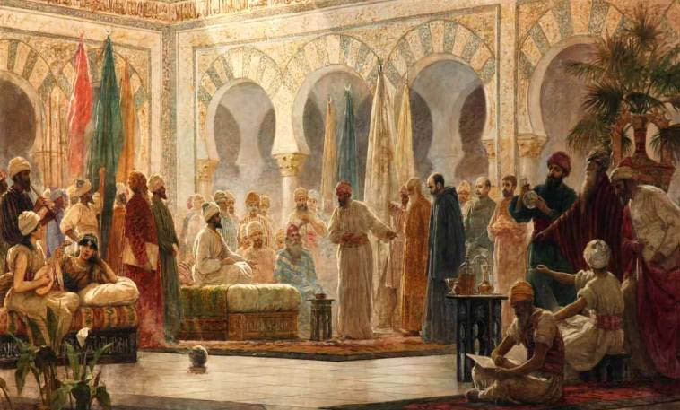
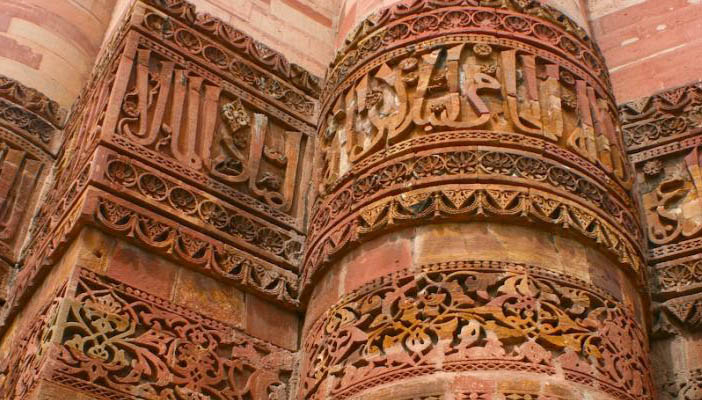
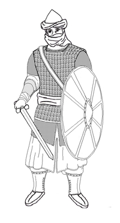

|
|
|
|||||||
|
|
|
|||||||
|  |  |
Basic Principles of Economic DevelopmentA Nation can only become stable when it follows some rules and there is no set of rules and regulations in the world better than Quran, Hadith and Sunnah. Muslims developed economic strategies in accordance with Islamic Teachings made our history glorious. Holy Prophet (S.A.W.) taught us the best way to practice the most stable economic strategies to make the Islamic state, a role model for the rest of thwe world. Allah says in Quran: |

|
Justice and Equality
Justice and Equality of human rights have a great importance in Islam. Every human have same rights and same duties without any kind of exception.
Deviation from the path of justice is not allowed, even when it concerns one's opponent or enemy (5:8). The ruler and the ruled, the rich and the poor, black and white, should be treated equally before law, without any discrimination or distinction of race, colour, sex, language, religion, political affiliation, birth or other status. The following two incidents illustrate how strictly this ideal was religiously maintained in the early phase of Islam in accordance with Islamic doctrines and commandments.
A woman by the name of Fatimah, belonging to the Banu Makhzum tribe, once committed a theft. Her kinsfolk, fearing that her hand would be amputated, sent Usamah ibn Zayd to intercede with the Prophet on her behalf. When the Prophet heard this pre-planned intercession, signs of anger appeared on his face.
"Are you trying to sway me as to the limits laid down by God?" he asked. Usamah ibn Zayd immediately admitted his mistake and begged the Prophet to pray on his behalf for forgiveness. The Prophet then delivered a sermon to those assembled there saying: (Al Bukhari, Muslim) Once, Holy Prophet (S.A.W.) also said: (Sunan, Ibn Majah) |
Establishment of Bait ul MaalBAIT UL MAAL is the department that dealt with the revenues and all other economical matters of an Islamic state. In the life of Holy Prophet (S.A.W.), all the money and revenue collected in any form was instantly distributed among people. But, after the death of Holy Prophet (S.A.W.), during the Al Rashidun Caliphate, Hazrat Umar (R.A.) recieved a revenue of 500,000 DIRHAMS from Hazrat Abu Huraira (R.A.) who was the governer of Bahrian at that time. It was to be decided what to do with that amount. Hazrat Umar (R.A.), with the suggestions of his companions, established THE BAIT UL MAAL. It was a Central Treasury at Madinah. |
Forbidden the Interest (Riba)Riba is an Arabic noun derived from the verb Raba, meaning 'to increase', 'to grow', and 'to exceed'. It includes interest which is paid by banks or on loans such as car loans, home loans or credit card debt. We can easily define RIBA as The Interest in any financial matter or dealing.
There are many proofs showing that riba is haram and one of the most serious sins in Islam! (Qur'an 2:278-279) Whole nations, dozens of them, large and small, have foreign debts so large that their riba payments on these debts are a crushing burden on the entire country. Riba conflicts with the spirit of brotherhood and sympathy, and is based on greed, selfishness and hard heartedness. Riba is a sure gain without any possibility of loss, hence all the risk is taken by the borrower, rather than sharing the risk and the profits with both parties. |
Department of Armed ForcesMuhammad Mustafa, the Messenger of God, had to fight a series of battles in the defense of Islam from his new home in Medina. Those battles in which he led the army of Islam in person, are called "Ghazwa" and those expeditions which he sent out from Medina under the command of any one of his companions, are called "Sariyya". Quran explains the rank of Shaheed in these words: (Surah 3, Aal-e Imran verse 169-170) During the era of Rashidun Caliphate, Hazrat Umar (R.A.), for the first time in history, established a proper department for armed forces and appointed the soldiers on merit bases and the soldiers also recieved salaries from the governement. A "Rashidun elite soldier" is equipped for infantry warfare. He wears an iron-bronze helmet, a hauberk and lamellar leather armour. His sword is hung from a baldric, and he carries a leather shield. |
 |
Development in Education and DAR UL HIKMAHSeeking the knowledge is made obligatory for every Muslim man and woman. Knowledge and Education have great importance in Islam because Islam is a complete code of life and it includes secrets of development, progress and prosperity for any nation and education is one of the most important factors for progress of a nation. Holy Prophet (S.A.W.) said: After winning the Battle of Badr, Holy Prophet(S.A.W.) ordered a demand of compensation for prisoners. But for those, who cannot give compensation and know how to read and write, will have to teach ten children in order to get bail. This example shows the importance of knowledge in Islam. DAR UL HIKMAHDar ul Hikmah (The House of Knowledge) was one of the most important educational institutions established by Muslims. The library's collection was so vast that historian, Ibn Abi Tayyi' described it as a "Wonder of the world".[1] Another historian Ahmed Bin Ali Maqrizi says "The House of Wisdom in Cairo did not open its doors to the public except before the furnishing, decoration and beautification of all the doors and corridors, and a large number of servants were appointed. And the number of shelves in forty cabinets, each one of them could accommodate about eighteen thousand books. And (the shelves) were open, and books accessible to everyone. And one who wants a book, then the book can be easily found by him. If a book cannot be found by oneself, one can seek the help of hired handlers." |
Zakat and UsharEach of the most trusted hadith collections in Islam have a book dedicated to zakat. Sahih Bukhari's Book 24, Sahih Muslim's Book 5, and Sunan Abu-Dawud's Book 9 discuss various aspects of zakat, including who must pay, how much, when and what. The 2.5% rate is also mentioned in the hadiths.
The hadiths admonish those who do not give the zakat. According to the hadith, refusal to pay or mockery of those who pay zakat is a sign of hypocrisy, and God will not accept the prayers of such people. The sunna also describes God's punishment for those who refuse or fail to pay zakat. On the day of Judgment, those who did not give the zakat will be held accountable and punished. Ushur or ushr, in early Islam, is a 5 percent for irrigated lands or 10 percent for non-irrigated lands levy on agriculture produce. Caliph Umar expanded the scope of ushr to include border trade tax. It literally means a tenth part, and it remained in practice in Islamic ruled territories from Spain and North Africa through India and Southeast Asia through the 18th century. Ushur was applied only on non-Muslim traders, at a rate of 10% of the value of the merchandise that was either imported or exported across the border controlled by the Islamic state. It applied to non-Muslim traders who were residents of the Islamic state, as well as to non-Muslim traders who were foreigners and wished to sell their merchandise inside the Islamic state. Historical medieval era trade documents between Oman and India, refer to this tax on ships arriving at trade port as ashur or ushur. The tax created an incentive for non-Muslim traders to convert into Muslims thereby escape the Ushr tax disadvantage. |